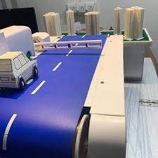
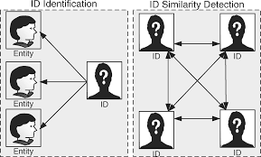
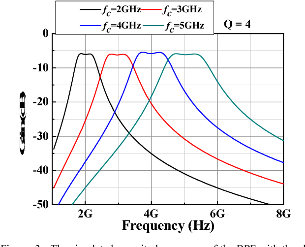
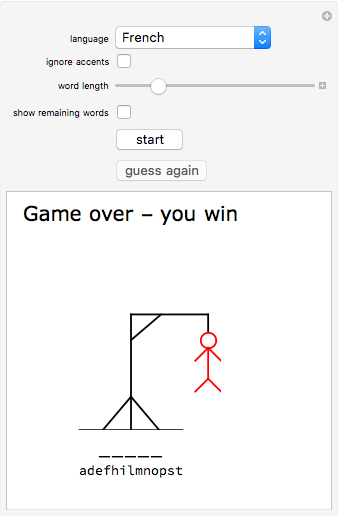

PROJECTS
| PROJECTS |
DESCRPTION |
PROTOTYPE |
MORE INFO |
| RFID FASTTAG SYSTEM |
FASTag is an electronic toll collection system in India, operated by the National Highway Authority of India (NHAI).
It employs Radio Frequency Identification (RFID) technology for making toll payments directly from the prepaid or
savings account linked to it or directly toll owner. It is affixed on the windscreen of the vehicle and enables to drive through toll plazas without stopping for transactions |

|
Click here |
| STYLOMETRY(python) |
Stylometry is the quantitative study of literary style through computational distant reading methods. It is based on the observation that authors tend to write in relatively consistent, recognizable and unique ways. |

|
Click here |
| HIGH QUALITY TUNABLE ACTIVE BAND PASS FILTER FOR NANO-SATELLITE APPLICATIONS |
The main aim is to design a multiband RF band-pass filter based on tunable high-Q active inductor for
Nano-satellite applications.This involves the design of active inductor which uses feedback resistance to improve
the equivalent inductance and the quality factor. The novelty of this work lies on the use of a few number of
multi-finger transistors, which allows reducing strongly the power consumption and the silicon area. |

|
Click here |
| HANGMAN(python) |
Hangman is a popular word guessing game where the player attempts to build a missing word by guessing one letter at a time.
After a certain number of incorrect guesses, the game ends and the player loses. The game also ends if the player correctly identifies all the letters of the missing word. |

|
Click here |